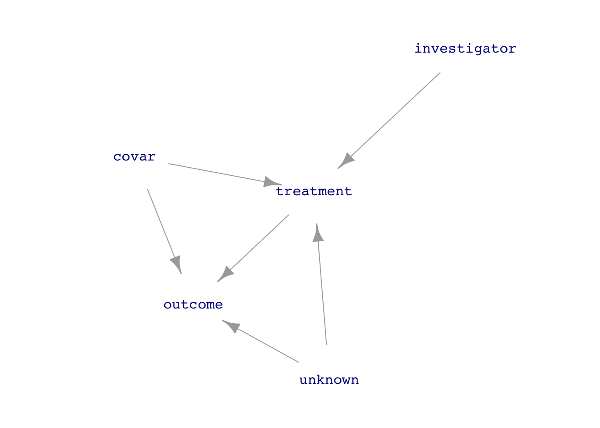
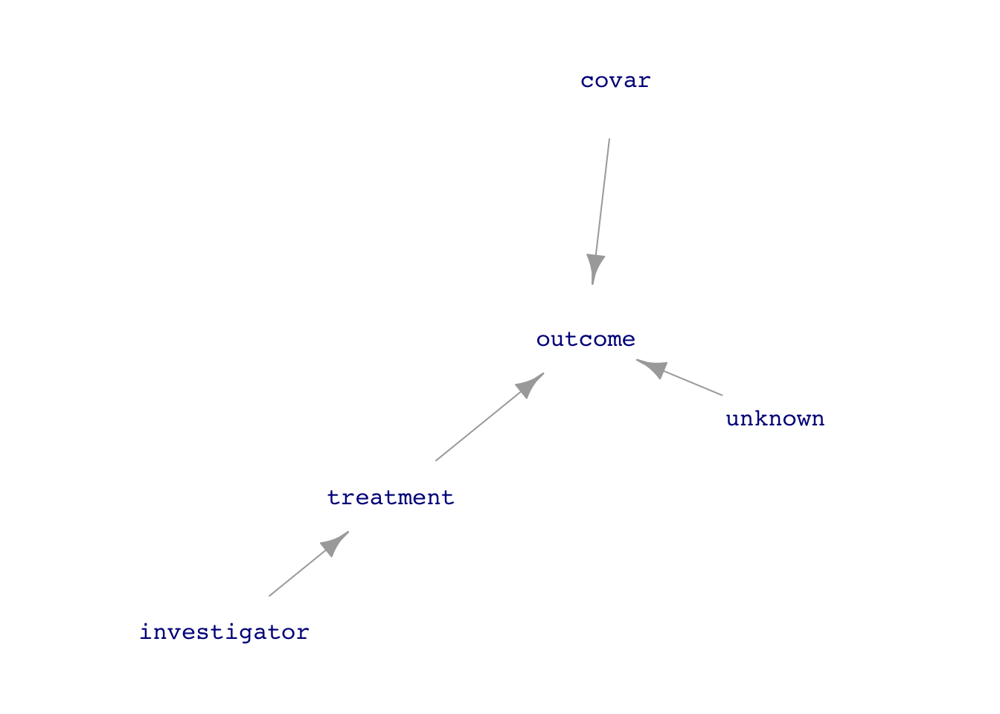
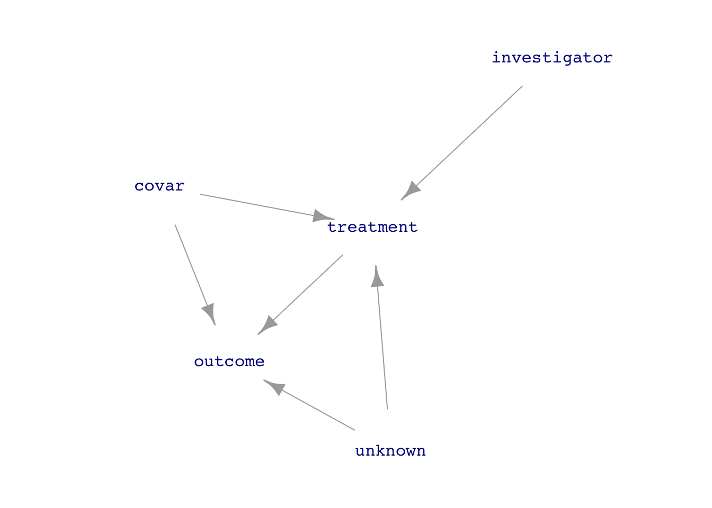

Code
Intent <- dag_make(
investigator ~ exo(),
covar ~ exo(),
unknown ~ exo(),
treatment ~ investigator + covar + unknown,
outcome ~ treatment + covar + unknown
)
set.seed(101); dag_draw(Intent, vertex.label.cex=1)
treatment is the explanatory variable of interest and outcome is the response.Natural <- dag_make(
covar ~ exo(),
unknown ~ exo(),
treatment ~ covar + unknown,
outcome ~ treatment + covar + unknown
)
Expt <- dag_make(
investigator ~ exo(),
covar ~ exo(),
unknown ~ exo(),
treatment ~ investigator,
outcome ~ treatment + covar + unknown
)
set.seed(101); dag_draw(Natural, vertex.label.cex=1)
set.seed(101); dag_draw(Expt, vertex.label.cex=1)

treatment on outcome. A natural system compared to another system in which the investigator has intervened to simplify the system with respect to data analysis.The data analysis techniques we have been using apply equally well to both observational and experimental data, although sometimes simpler techniques can be used in working with experimental data because the data-generation mechanism is simpler.
treatment \(\rightarrow\) outcome requires adjusting for the confounders covar and unknown which lie on back-door pathways between treatment and outcome. But without data on unknown, this is impossible.treatment to outcome, so the direct link can be studied without adjustments for covariates, known or unknown. In other words, analysis is simple and unambiguous despite the unknown factors.The trick to disconnecting treatment from the causal influences of covar or unknown is for the investigator to assign the values of treatment. Consider a medical investigation where treatment is whether a patient takes aspirin, which might be influenced by the overall health of the patient, some aspects of which might be measured (covar) and some not (unknown). In a medical experiment (often called a “clinical trial”), the patient would be assigned to either of two treatments: take aspirin or not. (In good experiments, “not” might mean taking a placebo, to be explained below.)
There’s a potential confusion introduced by using the word “treatment” for the experimental variable. In everyday speech, “treatment” refers to giving a drug or surgery or some other active intervention. In statistical vocabulary, a “treatment” can be “doing nothing.” Keep in mind that our data analysis techniques are always about relating the variation in an explanatory variable (and, as we choose, covariates) to the variation in the response. This means that the investigator must create variation in the treatment variable. This is done by giving different types of treatment to the different experimental units (e.g. patients).
Care should be taken in the investigator’s choice of which treatment should be given to which experimental unit. The key consideration is to avoid re-creating a link covar \(\rightarrow\) investigator or unknown \(\rightarrow\) investigator. A simple and effective safeguard is to use random assignment, that is, the value of investigator is set at random. Experience demonstrates that even when an investigator thinks his choice of treatment is random, there is some influence from outside factors. Example: The investigator prefers to assign placebo to those patients who are thought to be more likely to have a bad reaction. Another example: It’s convenient for record-keeping purposes to assign the intervention to those in the first months of a study and reserve the placebo for those in the later months. However, overall conditions might be different over time, e.g. winter turns into spring, medical suppliers or personnel change.
Consequently, it’s best for the investigator to let the random assignment be done by a computer random-number generator. This is an important part of experimental method and ought to be reported in any write-up of the experimental results.
Another situation that can create unintended backdoor pathways between treatment and outcome is when knowledge of the treatment can alter behavior by the experimental unit (patient) or the person who measures the outcome. For instance, in a vaccine trial, patients who know they have received a vaccine might be more willing to expose themselves, as with people returning to public venues after getting the COVID vaccine. Similarly, a doctor diagnosing a patient might be more inclined to look for other causes than COVID if the doctor knows that the patient was vaccinated.
Two methods are widely used to avoid such situations. The patients can be, in many circumstances, made unaware of whether they received the active treatment. A study that does this is called “blinded.” One way to accomplish this is to use a “placebo” or other sham treatment as the alternative to the active treatment. In a drug trial, for instance, all patients are given pills to take, but the patient doesn’t know whether the pill is an active treatment or not. In a vaccine trial, all patients are given the injection so the patient doesn’t know if they received the vaccine or an inert substance.
Often it is possible to arrange things so that the investigator doesn’t know whether treatment or placebo was given. (This information is hidden from the investigator until all the data has been collected, and revealed only in the data analysis phase.) Studies which keep the investigator ignorant in this way are called “double blinded,” since usually the patient is also kept ignorant of the treatment type.
GOING FURTHER. Sometimes it’s impossible to keep the treatment from being affected by other factors. For instance, patients might not comply with the instructions for taking a drug. Or, suppose treatment is assignment to a training program. Not all people so assigned might be active participants in the program. The non-compliance can, potentially, re-create the back-door pathways between treatment and outcome, as in Figure 2.
Intent <- dag_make(
investigator ~ exo(),
covar ~ exo(),
unknown ~ exo(),
treatment ~ investigator + covar + unknown,
outcome ~ treatment + covar + unknown
)
set.seed(101); dag_draw(Intent, vertex.label.cex=1)
There are two methods available to deal with such situations.
Intent to treat involves a very easy change in the data analysis: instead of modeling outcome ~ treatment, model outcome ~ investigator. In other words, look toward the intent of the investigator rather than the actual value of treatment. Notice in Figure 2 that there are no back-door pathways between investigator and outcome. The model outcome ~ investigator therefore avoids confounding. This is not a panacea, since in the case of non-compliance, the effect size of investigator on outcome will tend to be weaker than the direct effect size of treatment on outcome.
A more mathematically sophisticated analysis goes by the name instrumental variables, a technique especially esteemed in econometrics. Remarkably, the intrumental variable technique is used even in a non-experimental setting, where the investigator has not intervened in the system. In such cases, the technique relies on identifying a measurable variable, called an “instrument,” that takes the place of investigator. The theory of instrumental variables is too difficult to summarize here. The term “natural experiment” is often used to describe a study undertaken with instrumental variables. But such studies are not “experiments” in the sense used above, which involves an investigator intervening in the causal system.